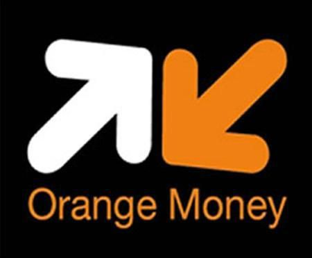

Comme son nom l’indique, NOUR « Lumière » en français, la société NOUR TRANSPORT VOYAGEURS SARL a été créée en 2014 dans le but d’éclairer, de faciliter, d’apporter un changement dynamique et positif dans les politiques de développement du secteur privé au Mali et dans la sous-région Ouest Africaine. Elle est une société de droit commun qui a pour vocation : le transport des personnes, des biens et services, les locations et les ventes de véhicules de tous genres. Et à cette activité s’ajoute celles du Commerce Général (Commerce de thé et autres marchandises) et les Bâtiments Travaux Publics et Particuliers et les Forages. Disposant de vingt-six (26) autobus comme parc automobile reparti entre deux axes : Bamako-Dakar, Bamako-Niamey en passant par Gao. Pour mener à bien ses activités, la société s’est doté d’un personnel administratif (chef d’escales, comptables, contrôleurs, guichetier, chargeur) , et d’un personnel mécanique (chauffeurs, mécaniciens, apprentis).Pour le moment elle dispose de 19 escales (3 à Bamako, Ségou, San, Sévaré, Douentza, Hombori, Boni, Gossi, Gao, Ansongo, Ayerou, Niamey, Diéma, Kayes, Diboli, Kaolack, Dakar) et envisage dans l’avenir des nouvelles escales à l’intérieur du pays (Koutiala,…) ainsi que dans les sous-régions (Lomé, Ghana ,…) en fonction de l’agrandissement de son parc automobile. Son côté commerce, elle se focalise sur le ‘’thé Antilope’’ de la chine vers les autres destinations selon la demande et les BTP s’occupent des marchés étatiques ou privés sur constructions routes, bâtiments, puits etc…, ainsi que de l’hydrocarbure avec une station à Gao. Courant l’année 2015 la société, grâce aux flux de la clientèle, a élargi non seulement son parc automobile avec l’achat des nouveaux bus MCV et aussi de nouvelles destinations telles que la Côte d’ivoire (Abidjan, Yamoussoukro, Bouaké, Ouangolo, Pogo…), le Burkina Faso (Ouagadougou, Bobo Dioulasso,…), la Mauritanie (Nouakchott, Gogui, Koubeni, Kiffa,…) et le Niger en passant par le Burkina et en passant par Abidjan et aussi plusieurs villes à l’intérieur du Mali telle que Nioro du Sahel, Niono, Sikasso, Koutiala, Bla etc… Pour plus de confort et dans le souci de fidéliser toujours ses clients, la société NOUR a ouvert certains points de vente de ticket à Bamako à savoir Badialan, Médine et N’golonina afin de se rapprocher de ses clients et aussi des services d’achat de billet à distance.
LA SOCIETE

MODE DE PAIEMENT

